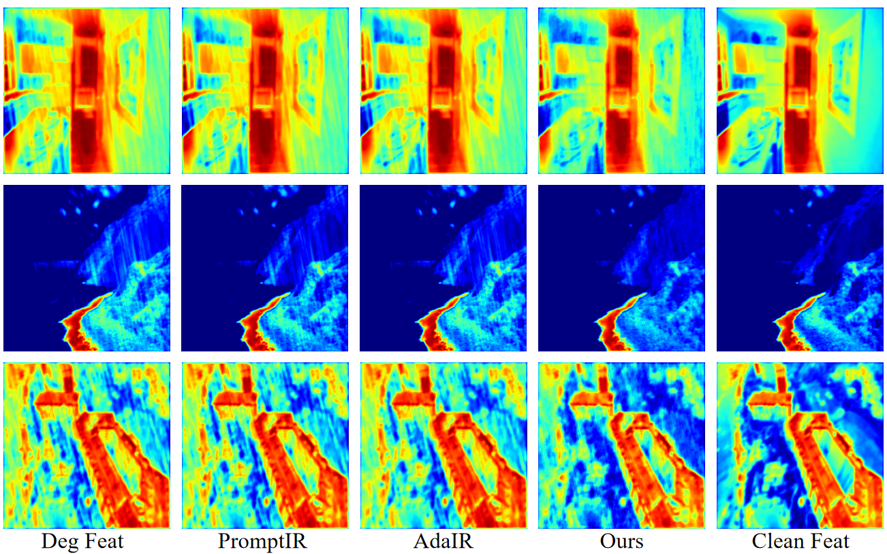
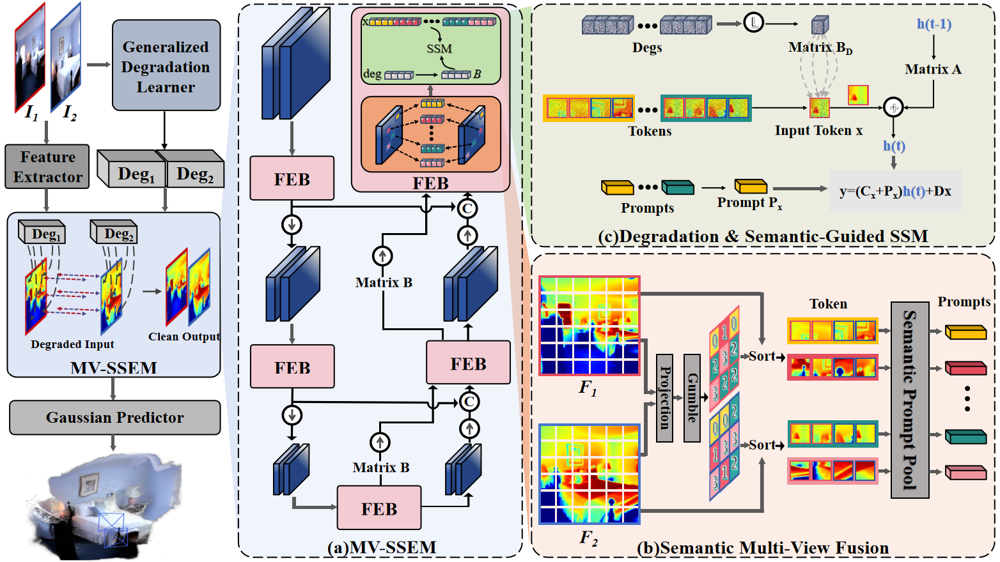
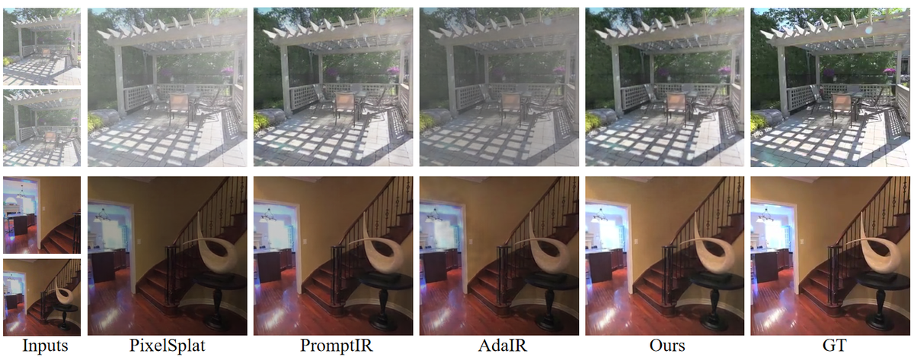
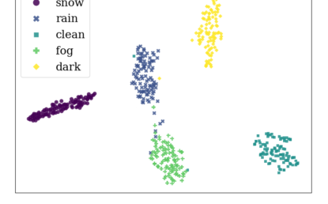

RobustGS
简单摘要
在现实场景中，图像通常是在噪声、弱光或下雨等具有挑战性的条件下捕获的，导致几何形状不准确和 3D 重建质量下降。为了应对这些挑战，我们提出了一种通用且高效的多视图特征增强模块，它大大提高了前馈3DGS方法在各种不利成像条件下的鲁棒性。

解决这些挑战对于在不受约束的环境中进行稳健的 3D 重建至关重要。这种目标不匹配通常会导致重建的 3D 结构中出现伪影和不一致，最终破坏场景表示的保真度和完整性。
核心创新
第一，为了应对这些挑战，我们提出了一种通用且高效的多视图特征增强模块，它大大提高了前馈 3DGS 方法在各种不利成像条件下的鲁棒性。
第二，具体来说，我们引入了一个新颖的组件，旨在从多视图输入中提取多种退化的通用表示和分布。
第三，此外，我们提出了一种新颖的语义感知状态空间模型。
技术细节
为了增强前馈 3DGS 在退化场景下的鲁棒性，我们提出了一个即插即用、统一的特征增强框架。如图（左）所示，整体框架高效且广泛适用于前馈 3D 重建方法，从而在各种退化条件下提高性能。这种训练机制能够以自我监督的模式进行学习，这样它就可以携带足够的退化线索，在与干净的内容结合时重建观察到的损坏的输入。



3.1 统一退化表示学习
这种训练机制能够以自我监督的模式进行学习，这样它就可以携带足够的退化线索，在与干净的内容结合时重建观察到的损坏的输入。为了鼓励嵌入捕获与退化相关的特征，我们通过两个互补的目标来优化模块。通过 、 、 和 的联合优化，嵌入模块学习以重构、区分、语义上与退化类别一致的方式表示退化。
3.2 多视图功能增强
我们的方法旨在提高从退化的多视图图像中提取的中间特征的质量，从而为下游 3D 重建提供更清晰、更可靠的特征。为了在未知的退化情况下实现鲁棒的一体式特征增强，我们引入了一种退化感知调制机制，该机制可以根据退化动态调整选择性扫描过程。为了进一步促进一致的信息传播，我们在解码器中引入了跨阶段反馈机制。
$$ \mathcal{L}_{\mathrm{rec}} = \lambda\| \hat{I}_{\mathrm{deg}} - I_{\mathrm{deg}} \|_1 + \mathcal{L}_{\mathrm{perc}}(\hat{I}_{\mathrm{deg}}, I_{\mathrm{deg}}). $$
这条式子给出了论文中的一条核心计算关系。理解时可以先看左侧最终想得到什么结果，再看右侧的 L、mathrm、rec、lambda 等量如何共同决定这个结果在方法链路中的作用。
$$ \mathcal{L}_{\mathrm{con}} = -\log \frac{\exp(\mathrm{sim}(z_i, z_j)/\tau)}{\sum_{k \ne i} \exp(\mathrm{sim}(z_i, z_k)/\tau)}. $$
这条式子给出了论文中的一条核心计算关系。理解时可以先看左侧最终想得到什么结果，再看右侧的 L、mathrm、con、log 等量如何共同决定这个结果在方法链路中的作用。
$$ \mathcal{L}_{\mathrm{cls}} = \mathrm{CrossEntropy}(f_{\mathrm{cls}}(z_{\mathrm{deg}}), y_{\mathrm{deg}}). $$
这条式子给出了论文中的一条核心计算关系。理解时可以先看左侧最终想得到什么结果，再看右侧的 L、mathrm、cls、mathrm 等量如何共同决定这个结果在方法链路中的作用。
$$ \dot{h}(t) = A h(t) + B x(t), \ y(t) = C h(t) + D x(t), $$
这条式子给出了论文中的一条核心计算关系。理解时可以先看左侧最终想得到什么结果，再看右侧的 dot、h、t、A 等量如何共同决定这个结果在方法链路中的作用。
$$ \overline{A} = \exp(\Delta A), \ \overline{B} = (\Delta A)^{-1} (\exp(\Delta A) - I) \Delta B, $$
这条式子给出了论文中的一条核心计算关系。理解时可以先看左侧最终想得到什么结果，再看右侧的 overline、A、exp、Delta 等量如何共同决定这个结果在方法链路中的作用。
$$ h_k = \overline{A} h_{k-1} + \overline{B} x_k, \ y_k = C h_k + D x_k. $$
这条式子给出了论文中的一条核心计算关系。理解时可以先看左侧最终想得到什么结果，再看右侧的 overline、A、overline、B 等量如何共同决定这个结果在方法链路中的作用。
$$ W_{\text{mod}} = W \odot \phi_W(z_{\text{deg}}), \quad W \in \{B, C, \Delta\}. $$
这条式子给出了论文中的一条核心计算关系。理解时可以先看左侧最终想得到什么结果，再看右侧的 mod、W、odot、deg 等量如何共同决定这个结果在方法链路中的作用。
$$ \mathbf{w}_i = \mathrm{GumbelSoftmax}(\mathrm{sim}(\mathbf{e}_i, \mathcal{P})). $$
这条式子是在把高斯的协方差从原始三维坐标系变换到相机或成像平面相关的坐标系中。这样后续光栅化时，模型才能正确知道每个高斯在当前视角下会拉伸成怎样的椭圆分布。
实验结论
实验部分主要围绕 此外，我们还比较了参数、FLOPs 和运行时间，以评估其效率和部署可行性 展开。结果表明，如表所示，完整的设计始终达到最佳性能，其中 SR 表示语义重新排序，MV 表示多视图。
| Brightness | Fog | Contrast | Snow | |||||||||
|---|---|---|---|---|---|---|---|---|---|---|---|---|
| (lr)2-13 | PSNR | SSIM | LPIPS | PSNR | SSIM | LPIPS | PSNR | SSIM | LPIPS | PSNR | SSIM | LPIPS |
| Pixelsplat | 15.03 | 0.7919 | 0.1753 | 14.88 | 0.7321 | 0.2044 | 18.40 | 0.7195 | 0.2453 | 19.15 | 0.5809 | 0.4297 |
| PromptIR | 14.31 | 0.7664 | 0.1797 | 21.50 | 0.8160 | 0.2043 | 18.30 | 0.7161 | 0.2440 | 19.87 | 0.6151 | 0.4089 |
| PromptIR72 | 16.99 | 0.7811 | 0.1897 | 21.33 | 0.8100 | 0.2031 | 21.80 | 0.8047 | 0.2197 | 21.46 | 0.6794 | 0.3844 |
| PromptIR73 | 23.91 | 0.8431 | 0.1645 | 20.35 | 0.8034 | 0.2145 | 16.29 | 0.6770 | 0.2557 | 17.13 | 0.6085 | 0.4404 |
| AdaIR | 14.78 | 0.7817 | 0.1775 | 20.91 | 0.8146 | 0.1994 | 18.37 | 0.7197 | 0.2457 | 19.72 | 0.6151 | 0.4049 |
| AdaIR72 | 23.59 | 0.8501 | 0.1527 | 15.40 | 0.7115 | 0.2709 | 16.88 | 0.7064 | 0.2315 | 16.29 | 0.5908 | 0.4458 |
| AdaIR73 | 23.45 | 0.8493 | 0.1631 | 15.54 | 0.6018 | 0.4518 | 15.37 | 0.6750 | 0.2560 | 15.54 | 0.6018 | 0.4518 |
| RobustGS | 24.87 | 0.8512 | 0.1617 | 21.52 | 0.8209 | 0.1974 | 22.05 | 0.8062 | 0.2147 | 20.78 | 0.6495 | 0.4003 |
| mvsplat | PromptIR | PromptIR72 | PromptIR73 | AdaIR | AdaIR72 | AdaIR73 | RobustGS | |
|---|---|---|---|---|---|---|---|---|
| Avg PSNR | 17.20 | 18.57 | 20.04 | 19.31 | 18.43 | 19.58 | 18.14 | 21.48 |
| Avg SSIM | 0.7307 | 0.7512 | 0.7726 | 0.7476 | 0.7499 | 0.7601 | 0.7425 | 0.7851 |


4.1 实验设置
4.1.1 数据集和实施细节
实验部分主要围绕 我们首先在 DIV2K 数据集上进行训练，这是一个广泛用于退化模拟的高质量图像数据集 展开。结果表明，遵循 RobustSAM 的退化协议，我们合成了不同的低质量变体，以实现鲁棒且可概括的退化先验的学习。
4.1.2 评估指标和比较方法
实验部分主要围绕 我们使用 PSNR、SSIM 和 LPIPS 评估新颖视图合成的质量 展开。结果表明，为了评估我们方法的有效性，我们在三种设置下将其与两个最先进的图像恢复基线 PromptIR 和 AdaIR 进行比较。
4.2 定量结果
4.2.1 定量比较
实验部分主要围绕 如表中所示，将 RobustGS 模块集成到前馈 3DGS 框架 Pixelsplat 中，可以在不同的退化场景和环境中带来一致且显着的性能增强 展开。结果表明，如表所示，RobustGS 在所有指标上始终如一地实现了具有竞争力的性能，再次证实了其稳健性以及对不同架构和条件的适应性。
4.2.2 复杂性比较
实验部分主要围绕 除了评估性能指标外，我们还比较了不同方法的计算复杂度，包括参数数量、FLOPs 和运行时间 展开。结果表明，正如表所示，与现有的图像恢复方法相比，RobustGS 模块不仅提供了显着的性能提升，而且还实现了更低的计算成本。
4.3 定性结果
实验部分主要围绕 图展示了我们的 RobustGS 与将代表性 IR 方法与 PixelSplat 重建相结合的管道在两种代表性退化场景（黑暗和雾）下的定性比较 展开。结果表明，虽然对单视图增强有效，但这些方法无法确保多个视图之间的几何一致性，通常会导致重建图像中的渲染伪影。
4.4 消融研究
实验部分主要围绕 在本节中，我们进行消融研究，以评估 RobustGS 中每个关键组件的贡献 展开。结果表明，我们首先分析影响并比较两种整合策略。
理解评价
如果把这篇论文放回问题背景里看，它真正的价值在于：在现实场景中，图像通常是在噪声、弱光或下雨等具有挑战性的条件下捕获的，导致几何形状不准确和 3D 重建质量下降。这说明作者不是只补一个局部模块，而是在重新组织问题该怎样被解决。
最能支撑这个判断的，还是实验给出的证据：为了应对这些挑战，我们提出了一种通用且高效的多视图特征增强模块，该模块大大提高了前馈3DGS方法在各种不利成像条件下的鲁棒性，从而实现高质量的3D重建。换句话说，这些设计并不只是概念上更完整，而是实实在在改变了最终结果。
当然，它离真正成熟的方案还有距离：当前方案的局限在于它仍然受制于计算资源、输入质量或场景复杂度，距离真正稳健的大规模部署还有差距。后续更值得继续推进的方向，是 后续更值得继续推进的方向，是未来继续提升效率、泛化能力以及在更复杂场景下的稳定性。